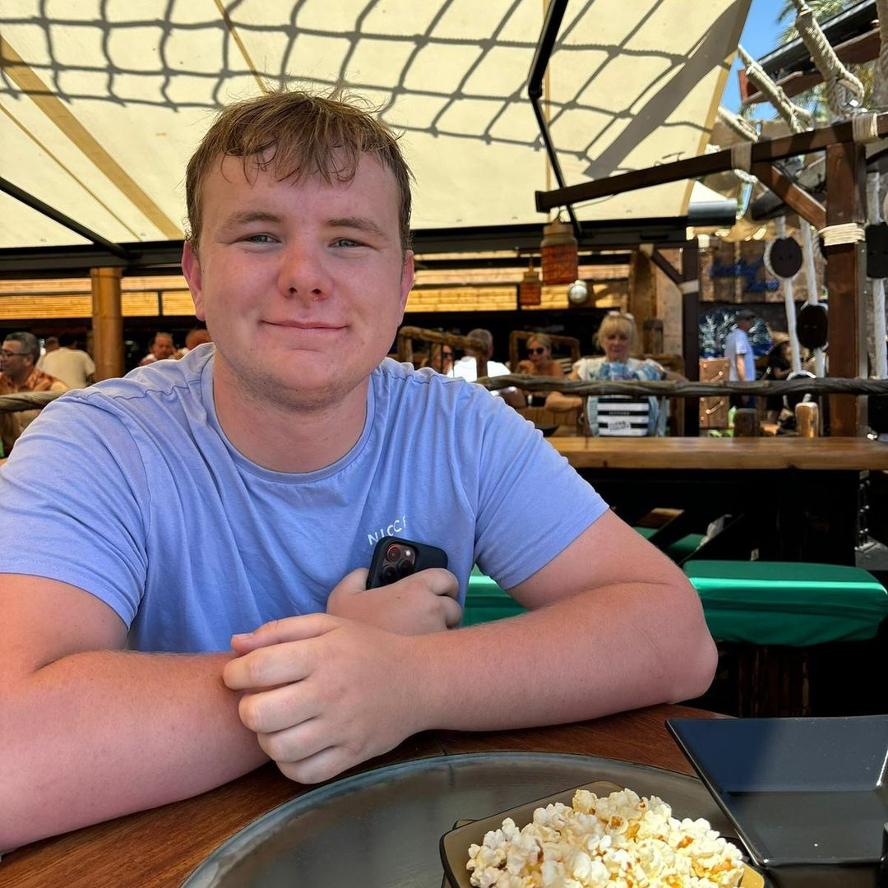

The safety net every creator mentions before investing a penny
← Blog Saving
Every wealth story on this site has a chapter its hero would rather skip. For Sean, it came after four years in the workforce with nothing saved, when illness knocked him onto statutory sick pay and the mortgage payment landed anyway. He could not cover it. That fortnight rewired his entire relationship with money, and it is why, years later, sitting on some £75,000 in accessible savings, he still talks about the emergency fund with the urgency of a man describing a fire escape.
The doctrine, as preached across the UK creator scene, is strikingly uniform. 
Mia Rose, whose Frugal Chic philosophy has carried her past £200,000 in net worth, scales the rule to the size of the leap you are taking. Her standing guidance is three months of living expenses, saved, but when she walked away from her 9-to-5, she carried twelve. The buffer is not a number; it is a ratio of courage to consequences.
Hannah Bevington, who reached £135,000 by 26, draws the hardest line of all. She lists the conditions under which you should not be investing at all, and having no emergency pot to dip into is on the list, alongside raiding investments month-to-month just to survive and carrying high-interest debt. Her logic is unsentimental: money you might need next month has no business riding market volatility this month.
Sean is the proof that the system works from zero. After the sick-pay scare he went, in his telling, full frugal mode: a three-month fund first, then more, until five years later the man who could not cover a mortgage payment held around £75,000 in savings with another £89,000 in pensions. The emergency fund did not just protect his wealth; it preceded it.
As for where the money sleeps, high-yield instant-access savings, separate from spending money, earning interest, reachable within hours. Not invested, not locked away, not quietly migrating toward a holiday. Three months minimum, six if you are self-employed or the only earner, twelve if you are about to bet on yourself. Build it before you invest a penny, and you will never have to sell a penny in a panic.
Nothing on this page constitutes financial advice. Figures quoted are self-described by each creator in their own TikTok videos, linked so you can check the source yourself.
Net worth figures are self-described by each creator in their own TikTok content and have not been independently verified. Nothing on this site constitutes financial advice. © 2026 SaveShare.io · API & Licensing